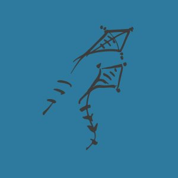
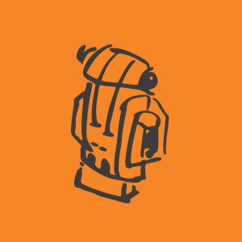
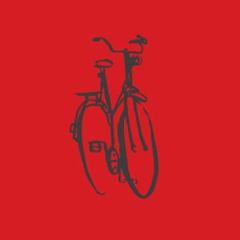
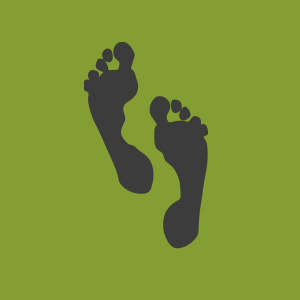
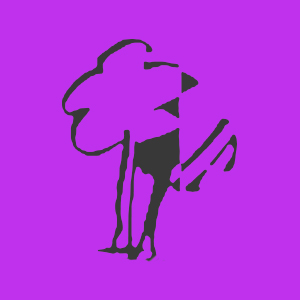

Wij zijn de kapoenen en hebben veel lol wij zijn de kleinsten maar dat speelt geen rol holadiejé, holadiejó, holadiehopsasa holadiejé!
kapoenenleiding@scoutsessencentrum.be
De Welpen, 8-11 jaar

De welpen van Scouts Essen-Centrum zijn coole kids! Na twee jaartjes gerijpt te hebben bij de kapoenen, zijn ze klaar voor het grotere werk. Elk weekend beleven zij lol in de jungle
welpenleiding@scoutsessencentrum.be
De Jongverkenners, 11-14 jaar

Vanaf nu begint het echte werk. De nesten worden achterwege gelaten, vanaf nu spreekt men over patrouilles. Iedere patrouille zijn eigen naam met bijhorende kreet!
jvleiding@scoutsessencentrum.be
De Verkenners, 14-18 jaar

De leden worden groter en sterker waardoor de leiding soms de handen stevig vol heeft. Maar heel vaak blijkt de leiding de leden toch nog te slim af te zijn.
vleiding@scoutsessencentrum.be
De Jins, 17-18 jaar

Jij en ik noodzaak! Dit is de lijfspreuk van onze oudste leden. Dit jaar maken zij kennis met het leiding worden.
jinleiding@scoutsessencentrum.be
Groepsleiding

Voor verdere vragen kan je altijd terecht bij onze groepsleiding! zij zullen u met plezier al uw vragen beantwoorden.